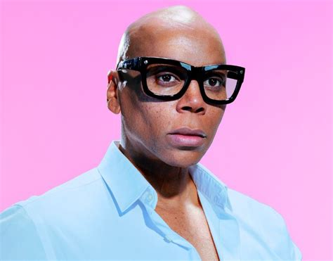

RuPual
Socials

A classic welcome when entering the Werk Room

Its hard not to enjoy a good laugh with Ru
- Born and raised in San Diego, CA. Moved to Atlanta, GA at 15
- Studied theatre at the North Atlanta School of Performing Arts
- Lead singer of rock band Wee Wee Pole before moving to NYC mid-eighties
- Crowned clubworld’s The Queen Of Manhattan in 1989
- Achieved international fame with hit song Supermodel (You Better Work)
- 1st feature film: Spike Lee’s Crooklyn
- Appears in more than 50 films & TV sitcoms
- Recorded a duet with Sir Elton John that reached #7 on the UK charts
- Signed a 7-year contract as the first face of M.A.C Cosmetics
- Filmed 100 episodes of TV talker The RuPaul Show on VH1
- NYC morning radio veteran: WKTU
- Published three books: Lettin’ It All Hang Out, Workin’ It & GuRu.
- Singer/Songwriter of 16 solo albums including the latest, “You’re a Winner, Baby”
- A wax portrait of RuPaul is displayed at Madame Tussauds Museum in NYC
- Host and Executive Producer of the world-wide hit reality competition series RuPaul’s Drag Race
- Hosted NBC’s “Saturday Night Live” February 8, 2020
- Five-time Emmy Award winner: Outstanding Host for a Reality Competition Program
- Critics Choice Award winner: Best Reality TV Host
- Named one of Time Magazine’s 100 Most Influential People of 2017
- Cover of Entertainment Weekly June 2017
- Cover of Vanity Fair January 2020
- 75K people attend RuPaul’s DragCon annually
- Starred in the Netflix series ”AJ and the Queen,” which he co-wrote & co-produced with Michael Patrick King
- Presented with a star on the Hollywood Walk of Fame by Jane Fonda March 2018
- 4+ million followers on social media
- Splits time between New York, California & Wyoming
- "You're born naked & the rest is drag."